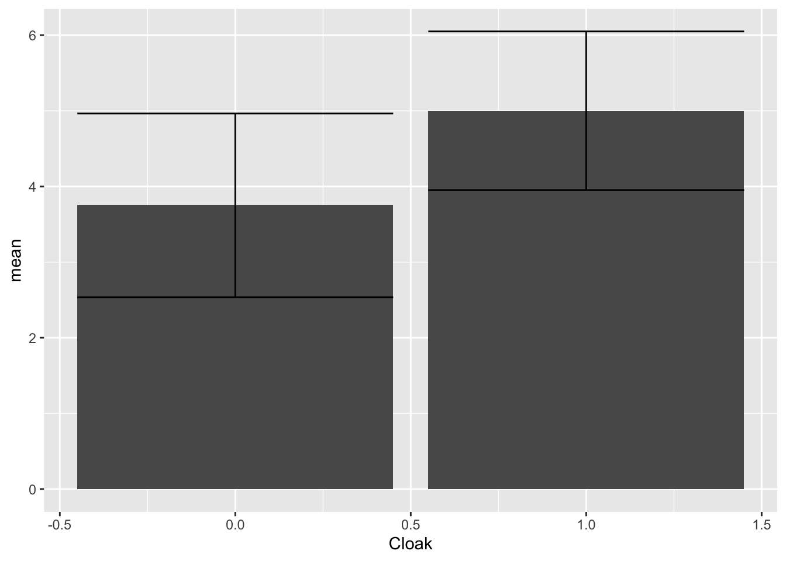
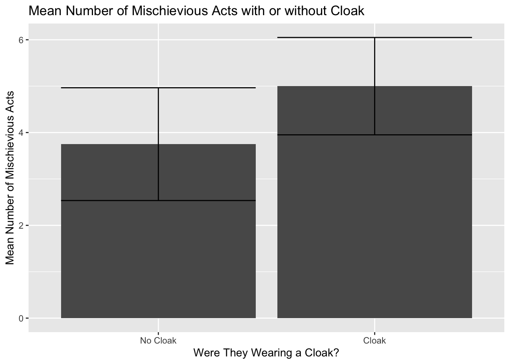

Independent t test
James Van Slyke
Resources to consult Chapter 10 from Field, A. (2017). Discovering Statistics Using IBM SPSS Statistics (5th Edition). SAGE Publications, Ltd. (UK).
Section from Learning Statistics with R
The independent t test is used when analyzing the difference in means between two separate groups. Typically, this is used to analyze the difference between the control group (group who did not receive the independent variable) and the experimental group (group who did receive the independent variable).
The null hypothesis assumes that the mean difference between the two groups is equal to zero. If the samples came from the same population, their means would be roughly the same and if they came from the same population their characteristics would be the same as well. Thus, the null hypothesis assumes no real differences based on the presence of the independent variable.
This type of design is sometimes referred as a between-groups or independent design. It requires a categorical (nominal) predictor or independent variable that will specify the two groups (experimental and control) and a continuous dependent variable that specifies the outcome.
There are two possible reasons why two samples have different means.
- The two sample means come from the same population, but the existence of measurement error and variability are the reason they are different. (Null hypothesis)
- The two sample means come from different populations, which have different characteristics, and reflect a genuine difference between the sample means. (Alternative hypothesis)
The t test is related to the z test, except that we are analyzing t scores rather than z scores. Remember the formula for a z score. \[ z = \frac{x - \mu}{\frac{\sigma}{\sqrt{n}}} \] So for the t test, we use a verion of the z test but compare the following: \[ t = \frac{(observed \;difference\;between\;means) - (expected\; difference\; between\;means)}{estimate\; of\; the\; \;standard\; error\; of\; the\; differnce\; \\between\; two\; sample\; means} \] Remember that the null hypothesis assumes that the expected difference between the means is equal to zero. So the numerator will simply be the difference between the two sample means \(x_{1}-x_{2}\). The z test uses the standard deviation from the sample as an estimate of the error divided by the square root of n. The t distruiotn is slightly different. Instead, it uses the standard deviation from the sample as an estimate fo the standard error. However we need estimates from both sample 1 and sample 2 so the equation looks like this: \[ \sqrt{\frac{s^{2}_{1}}{n_{1}}+\frac{s^{2}_{2}}{n_{2}} } \] This becomes the denominator of the independent t test formula, so we put it all together like this: \[ t = \frac{x_{1}-x_{2}}{\sqrt{\frac{s^{2}_{1}}{n_{1}}+\frac{s^{2}_{2}}{n_{2}} }} \]
##Independent t-test example
- First Step, upload dataset from SPSS
- Get data set named “Invisibility” from SPSS datasets
- Use import dataset tool under the environment tab
- Find file called invisibility.sav
library(haven)
Invisibility <- read_sav("Invisibility.sav")
View(Invisibility)Inspect variables
Invisibility$Cloak## <labelled<double>[24]>: Cloak of invisibility
## [1] 0 0 0 0 0 0 0 0 0 0 0 0 1 1 1 1 1 1 1 1 1 1 1 1
##
## Labels:
## value label
## 0 No Cloak
## 1 CloakInvisibility$Mischief## [1] 3 1 5 4 6 4 6 2 0 5 4 5 4 3 6 6 8 5 5 4 2 5 7 5
## attr(,"label")
## [1] "Mischievous Acts"
## attr(,"format.spss")
## [1] "F8.0"Create bar graph to examine data First step is to create a dataset with your descriptive variables We’ll use the dplyr package to do this, which is part of tidyverse
library(dplyr)
Invis_Descriptives <- Invisibility %>%
group_by(Cloak) %>%
summarize(n = n(),
mean = mean(Mischief),
sd = sd(Mischief),
se = sd / sqrt(n),
ci = qt(0.975, df = n - 1) * sd / sqrt(n))
Invis_Descriptives## # A tibble: 2 × 6
## Cloak n mean sd se ci
## <dbl+lbl> <int> <dbl> <dbl> <dbl> <dbl>
## 1 0 [No Cloak] 12 3.75 1.91 0.552 1.22
## 2 1 [Cloak] 12 5 1.65 0.477 1.05First let’s make a simple graph with just the basics
ggplot(Invis_Descriptives,
aes(x = Cloak,
y = mean)) +
geom_bar(stat = "identity")## Don't know how to automatically pick scale for object of type haven_labelled/vctrs_vctr/double. Defaulting to continuous. Next let’s add error bars
Next let’s add error bars
ggplot(Invis_Descriptives,
aes(x = Cloak,
y = mean)) +
geom_bar(stat = "identity") +
geom_errorbar(aes(ymin=mean-ci,
ymax=mean+ci))## Don't know how to automatically pick scale for object of type haven_labelled/vctrs_vctr/double. Defaulting to continuous. We can add in labels to improve the look of our chart. We’ve added labels to our factor variable and labels for the title and x and y variables.
ggplot(Invis_Descriptives,
aes(x = factor(Cloak, labels=c("No Cloak", "Cloak")),
y = mean)) +
geom_bar(stat = "identity") +
geom_errorbar(aes(ymin=mean-ci,
ymax=mean+ci)) +
labs(title = "Mean Number of Mischievious Acts with or without Cloak",
y="Mean Number of Mischievious Acts", x="Were They Wearing a Cloak?") Next let’s add some color to our chart
ggplot(Invis_Descriptives,
aes(x = factor(Cloak, labels=c("No Cloak", "Cloak")),
y = mean)) +
theme_minimal() +
geom_bar(stat = "identity", fill="cornflowerblue") +
geom_errorbar(aes(ymin=mean-ci,
ymax=mean+ci), width=.3, size=1) +
labs(title = "Mean Number of Mischievious Acts with or without Cloak",
y="Mean Number of Mischievious Acts", x="Were They Wearing a Cloak?") Based on the graph, it looks like there is a difference between the groups Let’s run a t test to make sure
Based on the graph, it looks like there is a difference between the groups Let’s run a t test to make sure
t.test(Mischief ~ Cloak, data = Invisibility)##
## Welch Two Sample t-test
##
## data: Mischief by Cloak
## t = -1.7135, df = 21.541, p-value = 0.101
## alternative hypothesis: true difference in means between group 0 and group 1 is not equal to 0
## 95 percent confidence interval:
## -2.764798 0.264798
## sample estimates:
## mean in group 0 mean in group 1
## 3.75 5.00List the effect size as well Cohen’s d - Subtract the means from each other and divide by the standard deviation of the control group
Cohens_d <- (5.00-3.75)/1.91
Cohens_d## [1] 0.6544503Write out conclusion
On average, participants given a cloak of invisibility engaged in more acts of mischief (M = 5, SE = 0.48), than those not given a cloak (M = 3.75, SE = 0.55). This difference, 1.25, 95% CI[-2.76, 0.26], was not significant t(21.54) = −1.71, p = 0.101; however, it did represent a medium-sized effect d = 0.65.
Steps to writing results
- Write out the means and include standard error
- Write out the difference between the means (Subtract the sample means) and the confidence intervals for the difference
- t(df)= t score, p value, Cohen’s d